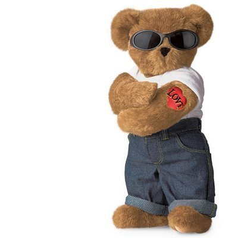

BLOGUINHO DO ASTRO
Astrogildo, o Urso Astronauta que Conquistou Marte (e Nossos Corações)
Em um mundo cheio de heróis improváveis, poucos são tão carismáticos e inusitados quanto Astrogildo, o primeiro urso pardo astronauta da história — ou, ao menos, da imaginação mais fértil e divertida que podemos ter. Com uma mistura de genialidade, coragem e muito mel na bagagem, Astrogildo nos lembra que até os sonhos mais absurdos podem se tornar realidade… mesmo que você tenha garras.
Um urso fora da curva (e da órbita)
Astrogildo nasceu na gelada taiga siberiana, em meio a pinheiros, neve e peixes saltitantes. Mas, diferente dos outros ursos, ele não se interessava por pescarias ou longas sonecas de inverno. Desde pequeno, seu olhar estava sempre voltado para cima — para as estrelas. Ele não queria hibernar… queria decolar.
Enquanto os filhotes brigavam por território, Astrogildo observava constelações, imitava o voo dos satélites e rabiscava equações com gravetos na neve. Seu sonho? Explorar o espaço sideral. E ele não só sonhou — ele se preparou.
Um achado científico e uma chance estelar
A virada aconteceu quando Astrogildo encontrou uma base científica russa escondida no meio da floresta. Ao invés de causar pânico, ele causou admiração. Os cientistas, entre surpresos e encantados, perceberam que aquele urso não era comum: ele entendia mapas, respondia a gestos, e até sabia operar um simulador de voo básico (com as patas, sim).
Foi assim que nasceu o projeto URSO (Unidade de Reconhecimento Soviético Orbitante), um programa secreto de exploração espacial com foco… peludo. E o nosso herói ganhou seu traje, sua nave e uma missão: ser o primeiro mamífero terrestre a pisar em Marte com dignidade, inteligência e um estoque bem generoso de sachês de mel.
O legado de Astrogildo
Ninguém sabe ao certo onde ele está agora. Alguns dizem que voltou à Terra e vive em paz numa cabana nos Alpes, tomando chá com astronautas aposentados. Outros acreditam que ele seguiu viagem, rumo a Saturno, em busca de novos mundos — e talvez de uma colmeia intergaláctica.
Mas seu legado permanece: Astrogildo nos ensinou que a inteligência não tem espécie, que sonhar alto vale a pena (mesmo com quatro patas), e que até os ursos podem alcançar as estrelas — desde que alguém acredite.